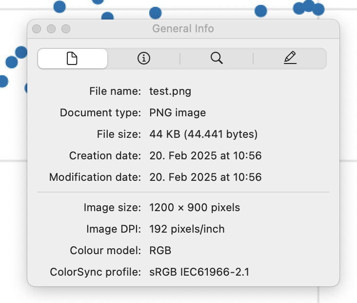

Makie v0.22.2
Makie 0.22.2 is finally here and introduces many fixes and improvements.
Cleanup Patterns/Hatching
Enhanced Patterns and Hatching features by improving line quality, adding unit and reference image tests, handling patterns in CairoMakie, fixing related issues in other backends, and updating documentation. This also introduced pattern anchoring to model space.

Nudge Axis3 clip planes to avoid clipping at 0 margin
Adjusted Axis3 clip planes to prevent unintended clipping when the margin is set to zero. Updated reference images to illustrate the change.
| v0.22 | v0.22.2 |
|---|---|

|
Added a tutorial on creating an inset plot
Introduced a tutorial explaining how to create inset plots. Mention the zoom_lines function from MakieExtras.jl for connecting inset plots.

Add documentation on mesh normal generation
Documented how vertex order affects normal generation in mesh plots, providing clarity on how different vertex arrangements can impact plot appearance.

Cleanup volume
Addressed discrepancies in volume plot algorithms between different platforms and added more detailed documentation and tests for volume rendering.


Improve nan handling in surface plots
Improved handling of NaN values in surface plots, ensuring consistency across different backends and updated reference images to reflect these changes.
| v0.22 | v0.22.2 |
|---|---|

|

|
DPI metadata for png
Added DPI metadata to PNG files, allowing external applications to interpret and display images at the correct size specified by their px perunit setting.

Voxel improvements
-
Replace voxel uvmap interface with uv_transform interface #4758
-
Fix voxels on linux firefox #4756.
-
Fix voxel rotation #4824
| v0.22 | v0.22.2 |
|---|---|

|

|
Curvilinear
contourf
Enabled curvilinear
contourf plots by allowing contour calculations to be dispatched on and transforming Isoband output using bilinear interpolation.

Fix broken
voronoiplot for clipped tessellations
Resolved an issue with
voronoiplot to work correctly with clipped tessellations and automatic color generation which was previously causing errors.
Add option to turn off clipping
Introduced a feature that allows users to disable clipping in plots by setting
ax.clip[] = false, providing more control over plotting output.
Resolve :data space when deciding whether to connect transformations
Improved transformation handling by tracing
:data space back to the scene, ensuring correct transformation connections.
Improvements for Slider updates
Added options to slider updates, including
update_while_dragging and
throttle, and introduced
lowres_background to the
Resampler to optimize performance when updating
heatmap(Resampler(data)) often.
Internal fixes for (W)GLMakie
-
Fix rare shader compilation error #4755
-
Upgrade to threejs 0.173, fixing a rare problem with NaNs in buffers
-
Fix WGLMakie nan error in cut plane, which broke Axis3 #4772
-
fix UInt underflow in line indices #4782
Allow higher dimensional geometries in poly
Restored support for rendering higher-dimensional geometries with the
poly() function, enabling 3D shape visualization as a mesh with outlines.
allow setting inspectable in the theme
Enabled setting the
inspectable attribute within themes, allowing for theme-wide customization of inspectability options across plots.
Allow
Block.attri... to autocomplete
Improved developer experience by enabling autocomplete for Block attributes, facilitating easier exploration and usage of block properties.
Consider visible in PolarAxis protrusions
Fixed the issue where PolarAxis protrusions did not consider visibility states, ensuring accurate rendering of visible elements only.
Widget optimizations
Optimized widget updates by reducing redundant updates, particularly removing
pick() usage where possible. This solves a rare issue, where
Textfield would stop working on a server with higher latency.
Fix WGLMakie tick and window_open events
Fixed issues related to tick and window_open events in WGLMakie, ensuring accurate event handling and fixing the toggle button for WGLMakie.